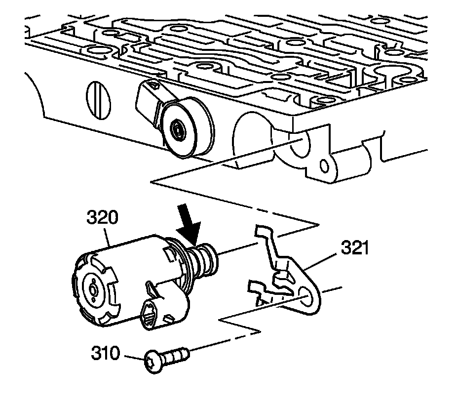
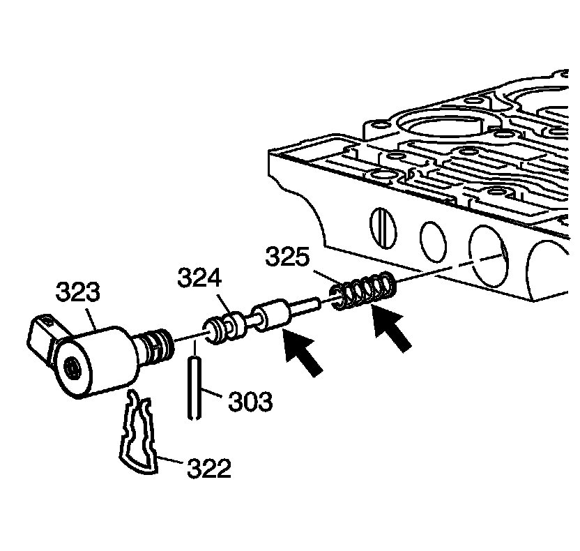
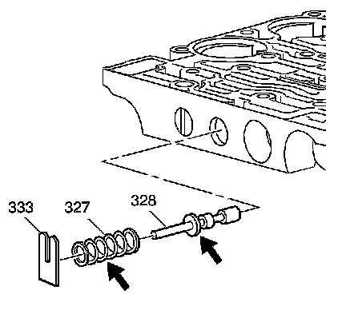
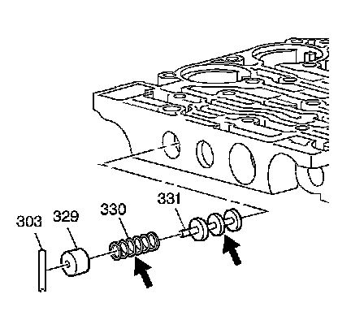
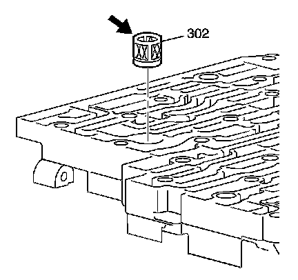
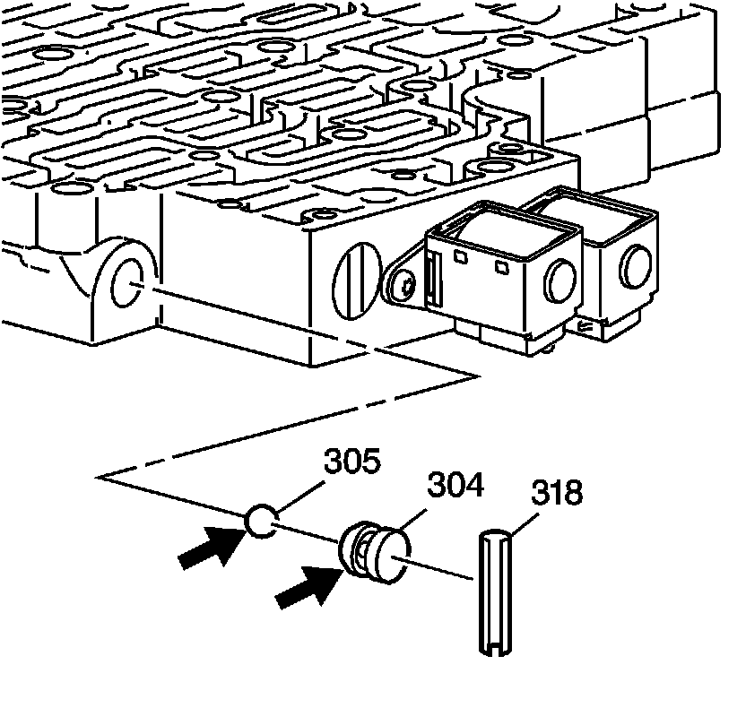
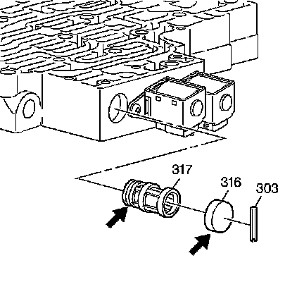
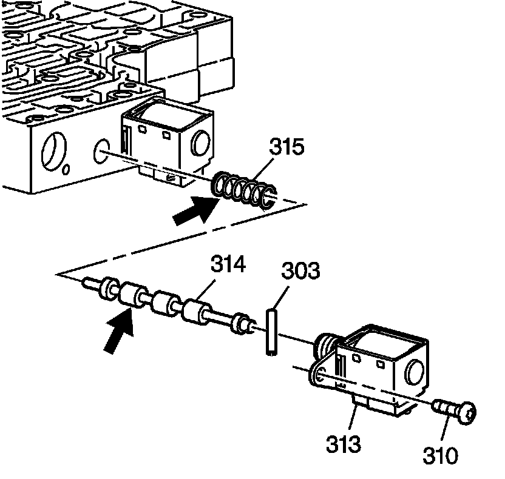
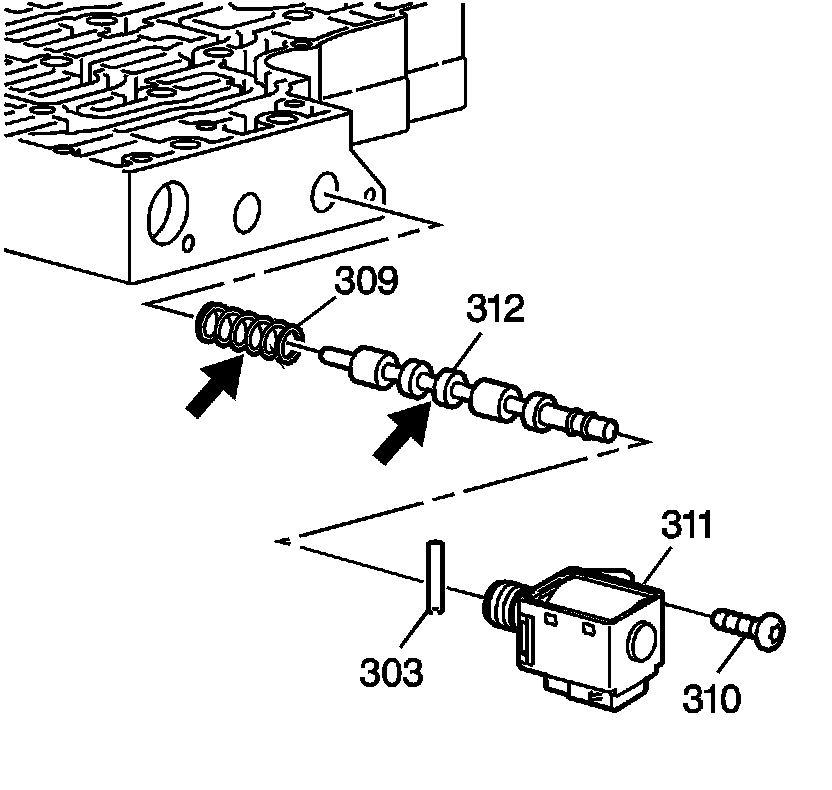
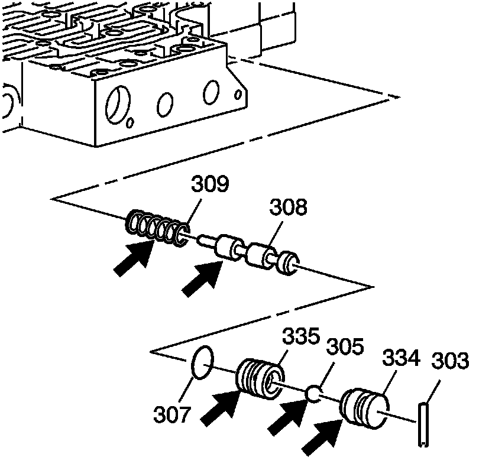

Control Valve Body Assembly Disassemble
Control Valve Body Assembly Disassemble

Caution: Valve springs can be tightly compressed. Use care when removing retainers and plugs. Personal injury could result.
1. Remove the pressure control solenoid clamp bolt (310) and clamp (321).
2. Remove the pressure control solenoid assembly (320).
3. Inspect the pressure control solenoid assembly (320) for a plugged or damaged screen.

4. Remove the TCC PWM solenoid valve retainer (322).
5. Remove the TCC PWM solenoid valve assembly (323).
6. Remove the TCC regulator apply valve pin (303). Use a drill bit to remove the spring pin.
7. Remove the TCC regulator apply valve (324).
8. Remove the TCC regulator apply valve spring (325).
9. Inspect the TCC regulator apply valve (324) for porosity, scoring, and nicks.
10. Inspect the TCC regulator apply valve spring (325) for distortion.

11. Remove the actuator feed limit valve spring retainer (333).
12. Remove the actuator feed limit valve spring (327).
13. Remove the actuator feed limit valve (328).
14. Inspect the actuator feed limit valve (328) for porosity, scoring, and nicks.
15. Inspect the actuator feed limit valve spring (327) for distortion.

16. Remove the accumulator valve bore plug retainer pin (303).
17. Remove the accumulator valve bore plug (329).
18. Remove the accumulator valve spring (330).
19. Remove the accumulator valve (331).
20. Inspect the accumulator valve (331) and accumulator valve bore plug (329) for porosity, scoring, and nicks.
21. Inspect the accumulator valve spring (330) for distortion.

22. Remove the pressure control solenoid valve fluid filter assembly (302).
23. Inspect the pressure control solenoid valve fluid filter assembly (302) for damage.

24. Remove the low-reverse ball valve seat pin (318).
25. Remove the low-reverse ball valve seat (304).
26. Remove the low-reverse ball valve (305).
27. Inspect the low-reverse ball valve seat (304) and the low-reverse ball valve (305) for porosity, scoring, and nicks.

28. Remove the shift valve fluid filter bore plug pin (303).
29. Remove the shift valve fluid filter bore plug (316).
30. Remove the shift solenoid valve fluid filter assembly (317).
31. Inspect the shift solenoid valve fluid filter assembly (317) for damage.
32. Inspect the shift valve fluid filter bore plug (316) for porosity, scoring, and nicks.

33. Remove the 1-2 shift solenoid valve bolt (310).
34. Remove the 1-2 shift solenoid valve assembly (313).
35. Remove the 1-2 shift valve pin (303).
36. Remove the 1-2 shift valve (314).
37. Remove the 1-2 shift valve spring (315).
38. Inspect the 1-2 shift valve (314) for porosity, scoring, and nicks.
39. Inspect the 1-2 shift valve spring (315) for distortion.

40. Remove the 2-3 shift solenoid valve bolt (310).
41. Remove the 2-3 shift solenoid valve assembly (311).
42. Remove the 2-3 shift valve pin (303).
43. Remove the 2-3 shift valve (312).
44. Remove the 2-3 shift valve spring (309).
45. Inspect the 2-3 shift valve (312) for porosity, scoring, and nicks.
46. Inspect the 2-3 shift valve spring (309) for distortion.

47. Remove the 3rd-reverse ball valve seat pin (303).
48. Remove the reverse ball valve bushing (334).
49. Remove the 3rd-reverse ball valve (305).
50. Remove the 3rd ball valve bushing (335) and 3rd ball valve bushing seal (307).
51. Remove the 3-4 shift valve (308).
52. Remove the 3-4 shift valve spring (309).
53. Inspect the 3rd-reverse ball valve bushings (334, 335), the 3rd-reverse ball valve (305) and the 3-4 shift valve (308) for porosity, scoring, and nicks.
54. Inspect the 3-4 shift valve spring (309) for distortion.